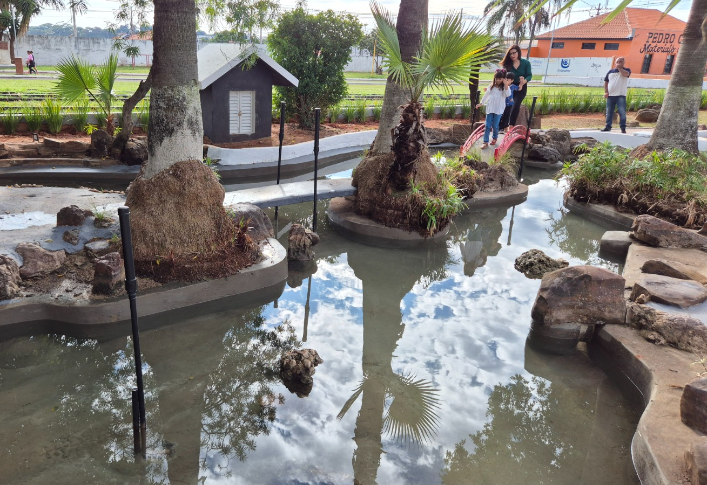
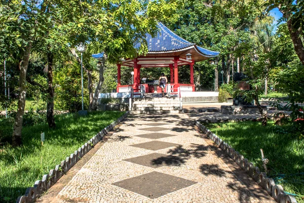
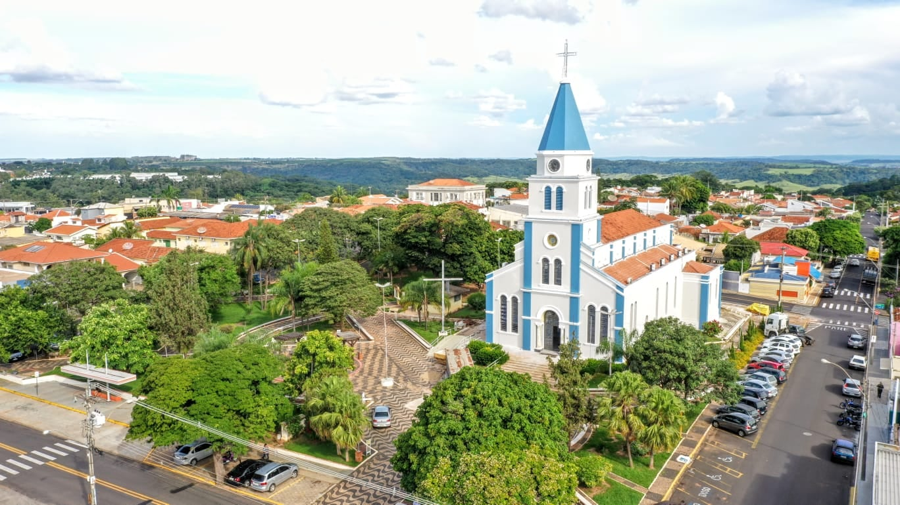
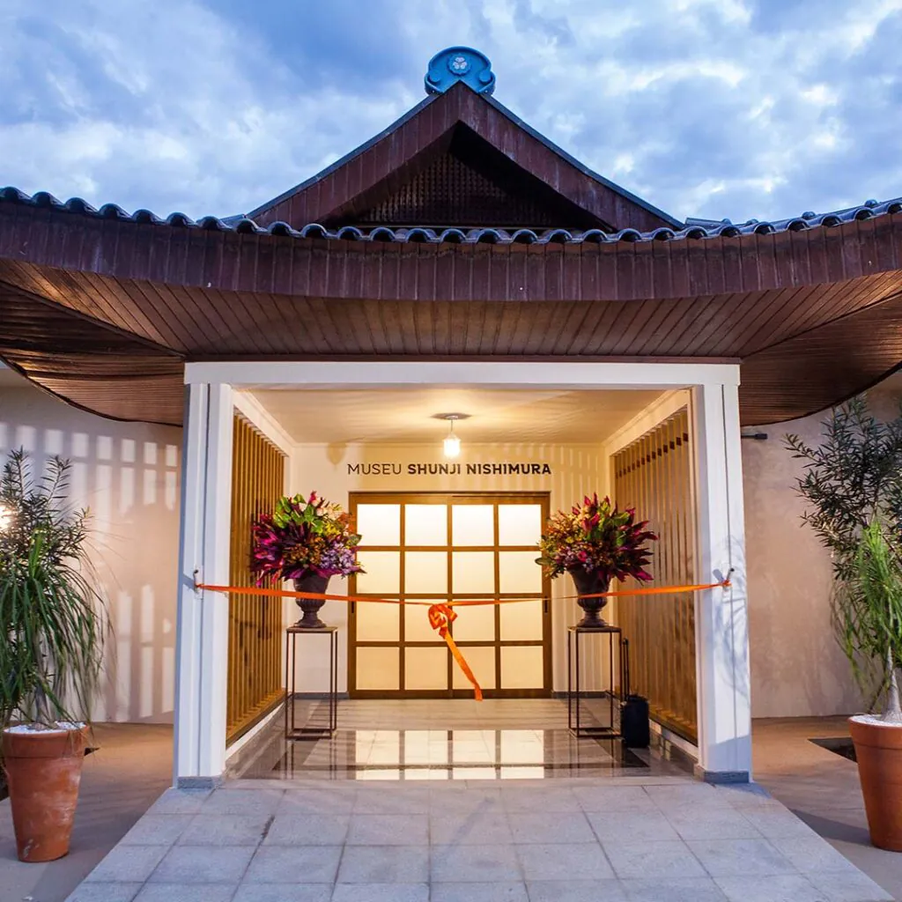

Praça da Cerejeira
Um belo espaço público arborizado com cerejeiras, ideal para passeios em família, piqueniques e momentos de tranquilidade. A praça é especialmente encantadora durante a floração das cerejeiras.
Localização: Centro de Pompeia

Praça Brasil Japão
Esta praça celebra a amizade entre Brasil e Japão, com elementos arquitetônicos que remetem à cultura japonesa. Um local perfeito para apreciar a natureza e aprender sobre a influência cultural nipônica na região.
Localização: Bairro Bandeirantes

Praça Jesus Maria
Um espaço religioso e de contemplação, a Praça Jesus Maria oferece um ambiente sereno para reflexão. Com belos jardins e uma atmosfera tranquila, é um refúgio espiritual no coração da cidade.
Localização: Centro de Pompeia

Museu Shunji Nishimura
Este museu preserva a história da imigração japonesa na região e homenageia Shunji Nishimura, importante figura na colonização. O acervo inclui fotografias, documentos e objetos que contam esta fascinante história.
Localização: Distrito Industrial